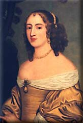

|
by Stefan Bielinski Alida Schuyler was born in 1656, the third of the ten children of Beverwyck pioneers Philip Pieterse and Margarita Van Slichtenhorst Schuyler. Alida grew up in the Schuyler family home - a center of Albany activity in the years after the English takeover in 1664. As the daughter of Albany's foremost fur trading family, it was not so surprising that nineteen-year-old Alida would be matched with Nicholas Van Rensselaer, the thirty-nine-year-old son of the founder of Rensselaerswyck - thus joining two of the pre-eminent fortures in the region. The couple had no children before Van Rensselaer died in 1678. Less than a year later, Alida married Robert Livingston - a recently arrived Scottish opportunist and former clerk of her deceased husband. That union was for life and produced a large family of nine children who went on to establish the Livingstons and the Schuylers in the first rank of New York society. The couple took up residence in what had been a Van Rensselaer house at the Elm Tree Corner. Encouraged by the Schuylers, Livingston pressed the Van Rensselaers for the balance of Alida's inheritence - making Livingston their sworn enemy and straining the relationship between Alida's family and the patroonship. Robert Livingston's business frequently took him away from Albany and Alida took charge of her husband's extensive Albany operations. For the first two decades of their marriage, the often expecting wife received instructions from New York, Boston, and London where her husband was forging the largest and most active new fortune north of New York City. Her letters to Robert Livingston over a long period of time testify to the scope of her activities, the depth of her business acumen, and also to the stress the separations placed on their relatiionship. However, Livingston was appointed co-executor in the will filed by her mother (probably in 1707) while Alida was named to share in her estate. With the coming of age of her eldest son, Philip, middle-aged Alida became less active in their Albany business. By the end of the 1700s, both parents had relocated to the Livingston country estate forty miles south of Albany. While Robert Livingston rarely returned to the place that had caused him much anxiety in the past, Alida frequently visited the Schuylers and her grandchildren in Albany. By 1716, Alida was living on Livingston Manor and in poor health. Her weakened condition raised fears for her life and brought her husband from the New York Assembly chamber to her bedside for an extended period of time. Over the next decade, neither partner would be in good health. An invalid, Alida died in May of 1727 at the age of seventy-two. That autumn, her body was entombed in the church vault on Livingston Manor. Robert Livingston died a year later and was laid to rest with her in the family vault.
Portrait by an unidentified artist possibly of Alida Schuyler at the time of her first marriage in 1675. This information accompanies a black and white likeness reproduced in Ruth Piwonka, A Portrait of Livingston Manor (Clermont, NY, 1986), 102. The "colored" image reproduced here was found unattributed on an ineresting Livingston website. Like many early American portraits, the attribution of it as Alida is highly speculative. As Robert Livingston's nephew, Robert Livingston, Jr., and son-in-law, Samuel Vetch, proved more interested in pursuing their own enterprises, Alida Livingston was called on to manage the daily operations of her husband's diverse business.
|